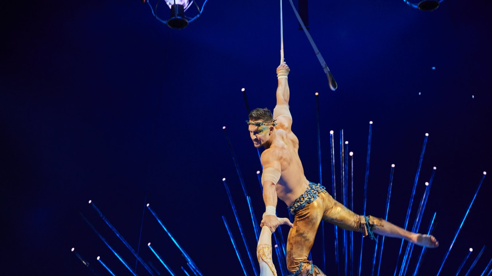

Foto — Anne-Marie Forker
Show
Cirque du Soleil volta ao Brasil com nova versão de “Alegría”
Espetáculo chega a São Paulo em agosto, sob a Grande Tenda no Parque Villa-Lobos, e segue depois para Curitiba O Cirque du Soleil volta ao Brasil com “Alegría —…